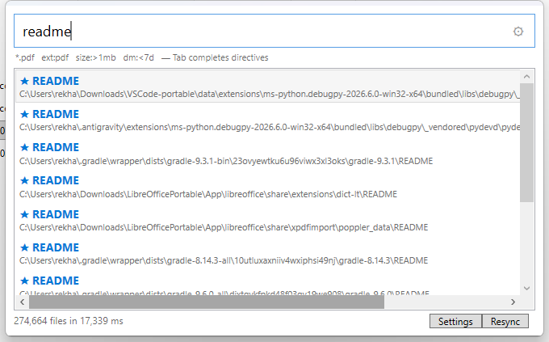

Global hotkey
Ctrl+Shift+F summons search from any app — no hooks or permissions needed for the main hotkey. Optional Ctrl double-tap included.
Free & open source · MIT licensed
Win Fast Finder is a lightweight, open-source file search tool for Windows 10 and 11. Press Ctrl+Shift+F anywhere, type a few letters, and the file is there — from an in-memory filename index, with no cloud, no telemetry and no admin rights.

Real screenshot from a live run — captured via synthetic SendInput, see tests/e2e.
Why Win Fast Finder
Windows Search is slow and can miss files. Popular alternatives are closed-source or paywalled. This one answers a single question — where is that file? — with fully auditable code.
Ctrl+Shift+F summons search from any app — no hooks or permissions needed for the main hotkey. Optional Ctrl double-tap included.
Filenames live in memory in bigram buckets, so a query narrows candidates and scores survivors — typically single-digit milliseconds, even past 100k names.
Zero network code — the app cannot phone home because it has no code that does. No telemetry, no analytics, no update ping. Ever.
Subsequence matching (inv finds invoice.pdf), glob patterns (2024-*.xlsx), exact-match ★ ranking and amber highlight on matched letters.
ext:, size:, dm: and path: directives slice results without leaving the keyboard. Tab completes prefixes.
No kernel driver, no NTFS MFT reads, no services. A ~240 KB app that runs as a normal user and uninstalls without a trace.
Query power
Free text plus optional directives, combinable in one line. Directive names are case-insensitive.
| Syntax | Meaning | Example |
|---|---|---|
report | Subsequence match on filenames | invoice finds my invoice.pdf |
*.pdf | Glob — * any run, ? one character | 2024-*.xlsx |
[OR] | Logical OR between words; [AND] is explicit AND | invoice [OR] report ext:pdf |
ext:pdf | Extension filter, repeatable = OR | ext:pdf ext:docx |
size:>10kb | Size filter: comparisons, decimals, units b k kb m mb g gb t tb, ranges | size:1mb..5mb |
dm:<7d | Date filter: relative units, today, absolute ISO days, ranges | dm:2024-05-10 |
path: | Full-path mode — path:Downloads ≡ Downloads path: | path:Downloads |
Press Tab to complete ex→ext:, si→size:, dm→dm:, p for path: (Tab accepts the suggestion list too). Exact filename matches get a ★ and rank first. Full reference: usage guide. In the app's search box, directive names glow amber and values cyan, and a suggestion list offers directives plus real extensions from your index. Broken directives glow red with an explanation in the status line — filters never fail silently.
| Keys | Action |
|---|---|
| Ctrl+Shift+F | Show the search window from anywhere (changeable, no hook needed) |
| Ctrl double-tap | Same — optional low-level hook that forwards press timestamps only, never keystrokes |
| Enter / double-click | Open the selected file |
| Ctrl+C | Copy the full path |
| Esc | Hide the popup |
A fullscreen guard suppresses the hotkey while a borderless game or video owns the screen — maximised windows are fine.
Windows Search alternative · Everything alternative
Real trade-offs, so you can decide for yourself instead of reading marketing.
| Open source | Needs admin | Filename search | Query filters | Price | |
|---|---|---|---|---|---|
| Win Fast Finder | ✅ MIT | ❌ No | ✅ Fuzzy + glob | ext: size: dm: path: | Free |
| Windows Search | — | No | Partial, index-dependent | Limited | Built in |
| Everything | ❌ Closed | Optional (USN journal) | ✅ Substring | Basic | Freeware |
| Listary | ❌ Closed | No | ✅ Fuzzy | Pro features paid | Free / paid |
Get started
win-fast-finder-Setup-1.0.2.exe from GitHub Releases.
Run Get-FileHash .\win-fast-finder-Setup-1.0.2.exe -Algorithm SHA256 and compare against the .sha256 file on the release page.
It elevates once (default C:\Program Files), checks for the .NET 8 Desktop Runtime before copying anything, then adds a Start Menu entry and optional autostart.
First run indexes your user profile. Add more roots in Settings for full-drive search.
Open source, engineered in the open
No marketing numbers. The benchmarks, the privacy statement and the installer are all reproducible from the repository.
Unit, integration and end-to-end tests — including a real-harness proof that drives the GUI with synthetic SendInput keypresses. New behaviour needs a failing-first test.
CI builds and tests every push; tagged releases produce the installer plus SHA-256 checksums and a source archive through a one-command packaging script. (Not code-signed — SmartScreen may warn; checksums let you verify.)
Zero third-party runtime dependencies, zero network calls, settings and cache confined to one %APPDATA% folder. Verify it yourself:
Select-String -Path src\*.cs -Pattern 'HttpClient|TcpClient' # → no hits
Dive deeper: architecture · privacy statement · contributing · changelog. Issues and pull requests are welcome.
Questions, answered
No. Win Fast Finder indexes filenames only — that is what makes it fast and what keeps it private. If you need file contents, Windows Search already does content indexing (which is why it is heavier).
Free, MIT-licensed, no paid tier, no account, no telemetry. The catch is honesty: the installer is not code-signed, so SmartScreen may warn you. See SECURITY.
No — there is literally no network code in the project. Full details in the privacy statement.
No. It reads ordinary directories — no kernel driver, no NTFS MFT access, no services. Only the installer elevates once, to write to Program Files.
Everything is closed-source and reads the NTFS MFT directly, so its first index is faster. Win Fast Finder is fully open source and non-admin. Warm starts here are instant (binary cache), and queries are typically single-digit milliseconds. See the comparison.
Windows 10 (1607+) and Windows 11, x64, with the .NET 8 Desktop Runtime installed.
Check %APPDATA%\win-fast-finder\log.txt for registered=True. Full walkthrough in the troubleshooting guide.
Yes — run Uninstall.exe, or use Windows Settings → Apps. It removes the app, data, shortcuts, autostart entry and registry keys.
size:1mb match?Whatever Settings → Search → Exact size says: Displayed size like Explorer (default), Exact bytes, or ±1%. Use size:=1mb for exactly 1,048,576 bytes.
It did not parse (size:abc, dm:xyz). Red never searches silently — the status line tells you the expected form. Amber always means "understood".
The human behind it
 👋 Open source
👋 Open source
Freelance software developer · Burhanpur, India
I designed and built Win Fast Finder end to end — the search engine, the WPF interface, the installer, the CI/release pipeline and every word of the docs. My background spans C#/.NET desktop development, Python, R and Jupyter-based data science. I work in the open: MIT-licensed code, reproducible builds and benchmarks I am willing to defend.